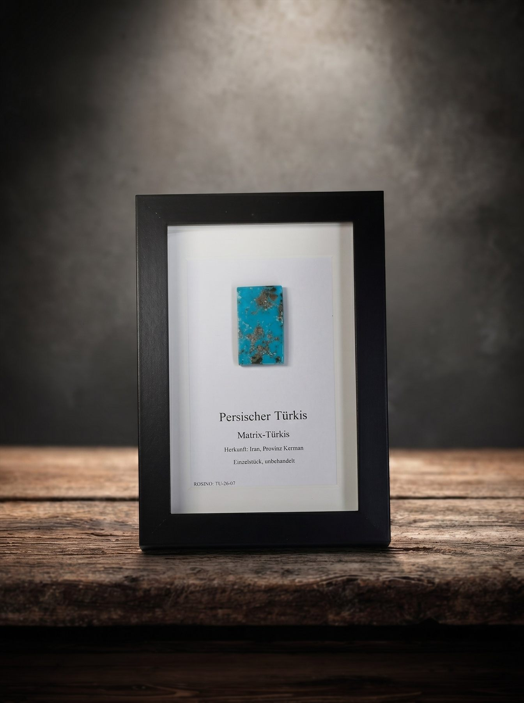
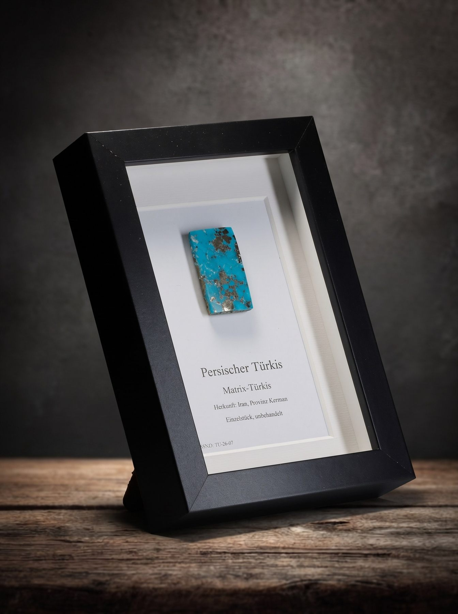
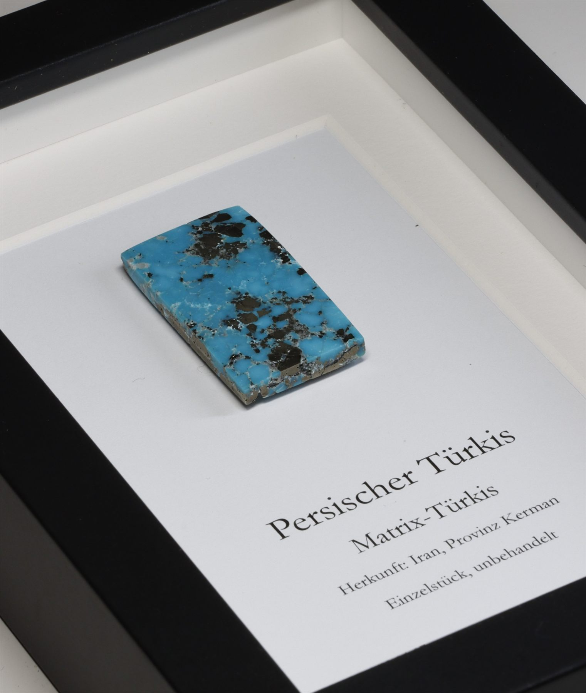
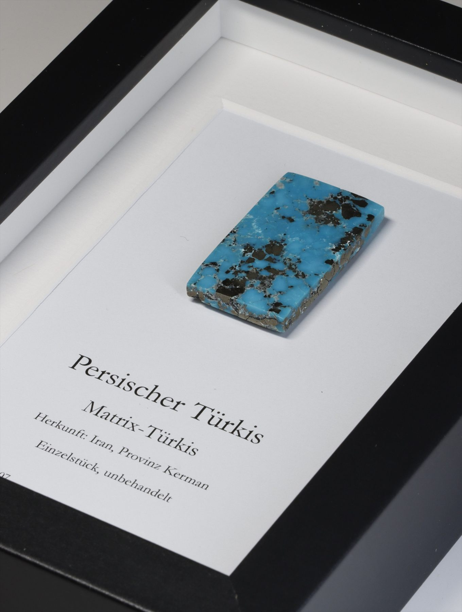
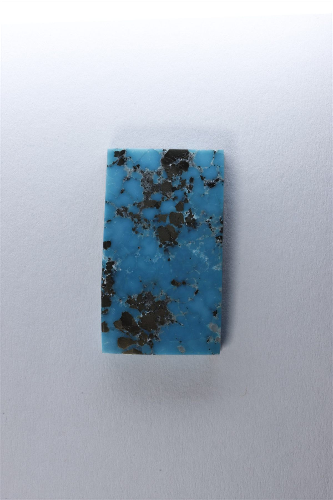
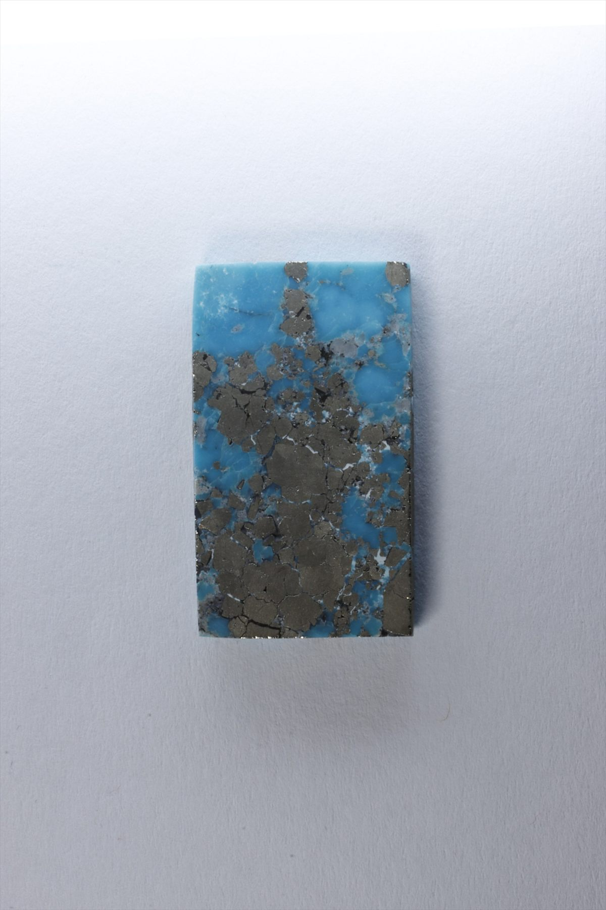
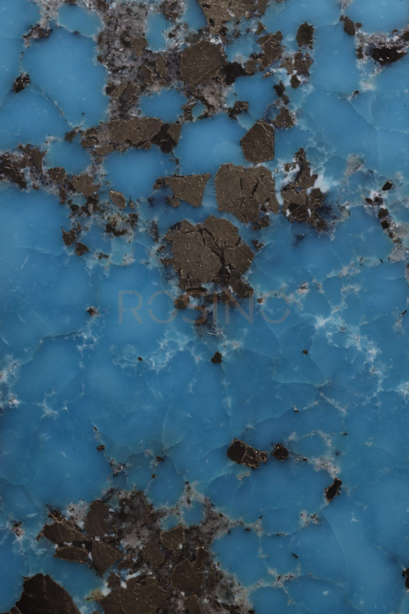
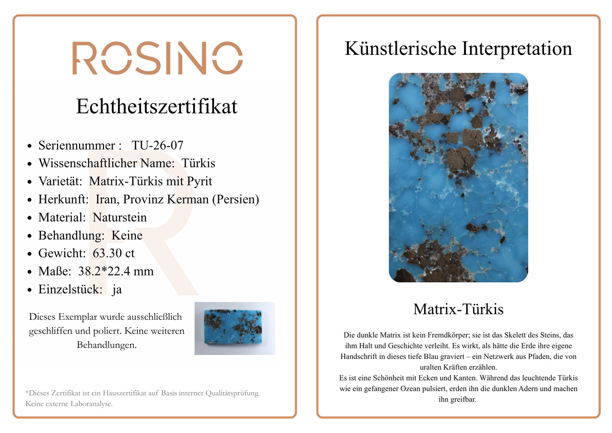

ROSINO ARTWORK · TU-26-07
Persischer Türkis
Matrix-Türkis

- Scientific name
- Türkis
- Variety
- Matrix-Türkis mit Pyrit
- Origin
- Iran, Provinz Kerman (Persien)
- Material
- Naturstein
- Treatment
- Keine
- Weight
- 63.30 ct
- Dimensions
- 38.2 × 22.4 mm
- Serial number
- TU-26-07
Artwork Views




Stone



Certificate
